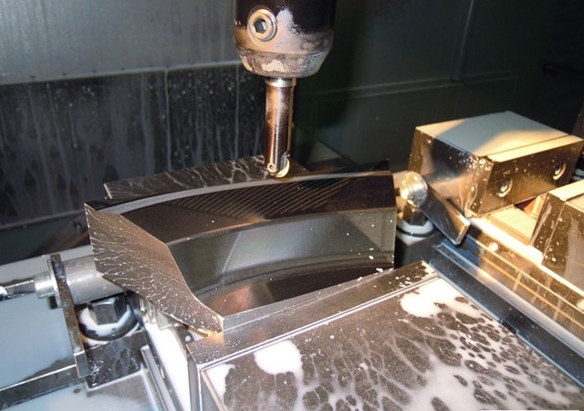
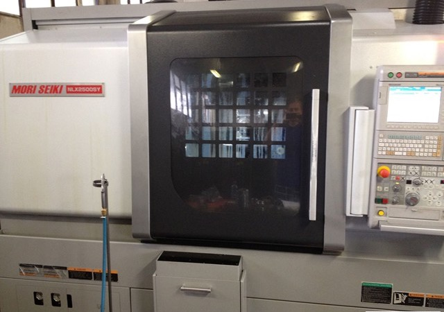
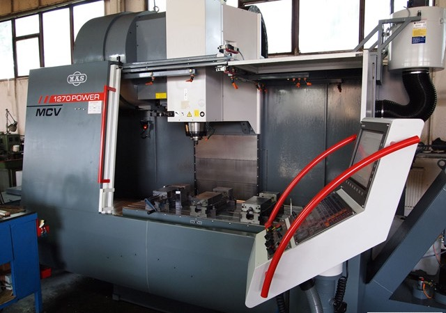
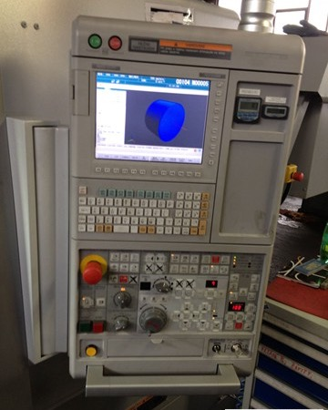
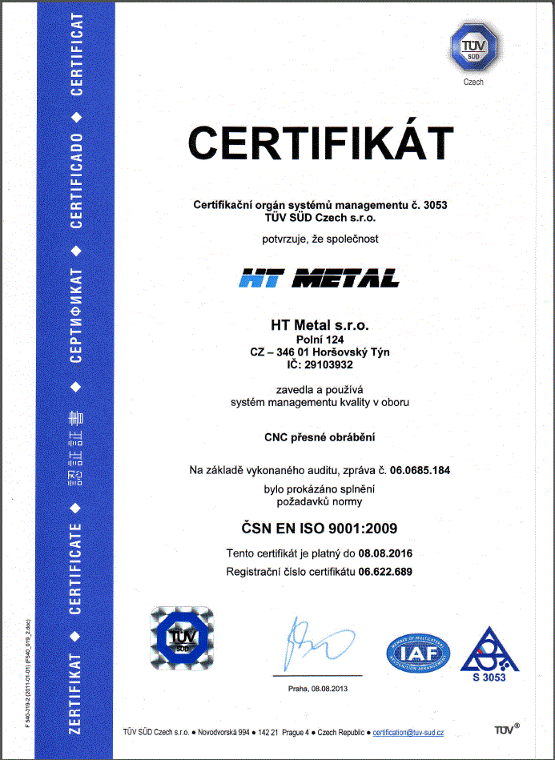

Přesné obrábění
Přesné CNC obrábění dílů podle výkresové dokumentace.
Soustružíme, frézujeme a brousíme na moderních CNC strojích. Přizpůsobíme se vašim požadavkům – pro průmysl a energetiku.

HT Metal s.r.o. je specialistou v oboru kovoobrábění – frézování, soustružení a broušení na klasických i CNC strojích. Poskytujeme i další služby v oblasti kovovýroby.
Společnost vznikla v roce 2010 a svoji výrobu staví na zkušenostech a odborných znalostech pracovníků, kteří působí na poli kovovýroby už řadu let. Díky technologicky dobře vybavenému strojnímu parku, spolehlivému vybavení a týmu kvalifikovaných pracovníků vyrábíme profesionálně zpracované díly s důrazem na maximální přesnost.
ISO 9001 – držitel certifikátu. AS/EN 9100 (letecký a kosmický průmysl) – v přípravě.
ŠKODA Power a.s. · STOPA Anlagebau GmbH
Programujeme v 3D CAD/CAM systému HSMWorks.
Kompletní kovovýroba pod jednou střechou – bez zbytečných prostředníků.
Přesné CNC obrábění dílů podle výkresové dokumentace.
Soustružení na CNC soustružnickém centru.
Frézování složitých tvarů na CNC obráběcím centru.
Broušení rotačních dílů s důrazem na přesnost.
Automatizované svařování rotačních dílů.
Montáž dílů a celků podle požadavku zákazníka.
Vyvažování rotujících dílů.
Povrchové úpravy dílů pro finální použití.
Tepelné zpracování dílů.
Hledáte dodavatele ze Západních Čech nebo z Plzeňského kraje? Jsme váš ideální partner.
Domluvit spolupráci →Od první zprávy po hotový díl ve čtyřech krocích.
Pošlete výkres nebo popis dílu e-mailem, případně zavolejte.
Navrhneme postup obrábění a naprogramujeme ho v systému HSMWorks.
Díl vyrobíme na CNC strojích.
Hotové díly zkontrolujeme a dodáme domluveným způsobem.
Moderní CNC stroje a CAM programování zajišťují opakovatelnou přesnost.

CNC soustružnické centrum.

Vertikální CNC obráběcí centrum.

Programování a simulace obrábění před výrobou.
Složité tvary, čisté povrchy, opakovatelná kvalita.
Certifikáty ke stažení ve formátu PDF.

Speciální požadavky leteckého průmyslu pro organizace provádějící návrh, vývoj a/nebo výrobu leteckých, vesmírných a obranných produktů.
Naše výrobky dodáváme mimo jiné do společností:
Rychlé odpovědi, než nám napíšete.
Napište na htmetal@seznam.cz nebo zavolejte jednateli. K poptávce se hodí výkres nebo popis dílu, materiál a počet kusů.
Sídlíme v Horšovském Týně v Plzeňském kraji. Dodáváme českým i zahraničním firmám, například společnostem ŠKODA Power a STOPA Anlagebau.
Držíme certifikát ISO 9001, který si můžete stáhnout v sekci Certifikace. Certifikace AS/EN 9100 pro letecký a kosmický průmysl je v přípravě.
Na CNC soustružnickém centru Mori Seiki NLX 2500ST a vertikálním obráběcím centru KAS MCV 1270 Power. Programujeme v systému HSMWorks.
Ano, patří mezi naše služby v oblasti kovovýroby. Konkrétní požadavky nám napište a domluvíme postup.
Práce na moderních CNC strojích v Horšovském Týně. Pošlete životopis a ozveme se, jakmile bude pro vás místo.
Napište nám pár řádků o sobě a pošlete životopis, nebo rovnou zavolejte jednateli.
Poptávku s výkresem nebo popisem dílu pošlete e-mailem, případně zavolejte.
Mapa se načte až po vašem souhlasu
Web používá jen jednu externí službu: mapu OpenStreetMap. Ta se načte až po vašem souhlasu a může ukládat cookies. Jinak nepoužíváme žádnou analytiku ani reklamu.